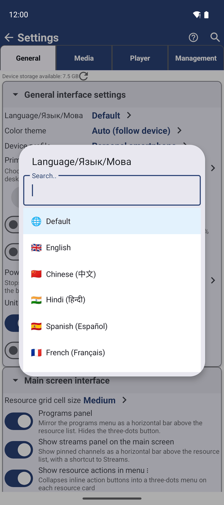
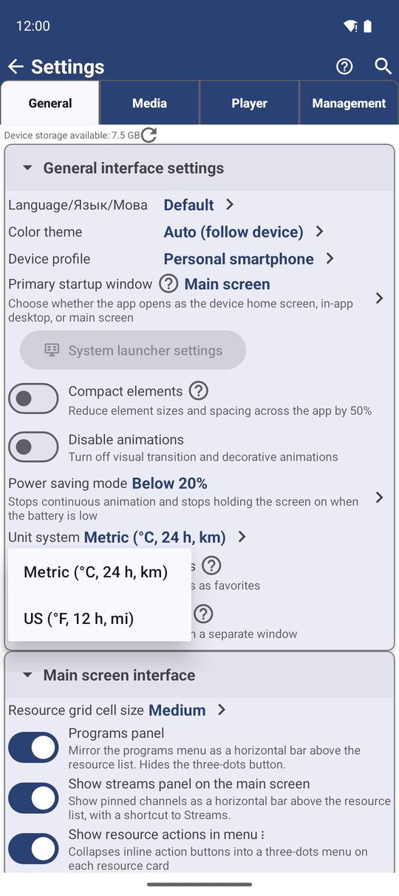

Choosing the App Language and Units
FastMediaSorter speaks thirteen languages and shows times, distances and temperatures in metric or US units. This page shows how the app picks its language, how to change it, and how to choose your units.
Why You'll Love This
An app is easiest to use in your own language, with distances, temperatures and times written the way you are used to. FastMediaSorter speaks thirteen languages and can show everything either in metric units with a 24-hour clock or in US units with a 12-hour clock.
Usually you do not need to do anything: the app starts in the language of your phone. This page is for the moments when you want something else - the app in English on a phone set to German, or miles on a phone that shows kilometers.
- ✓ FastMediaSorter in any edition. Language and units work the same in all seven.
- ✓ An internet connection, only if you installed the app from Google Play and pick a language the phone has not used before: the app then downloads that language first.
Let the app pick your language on the first start
On the first start, FastMediaSorter looks at the list of languages in your phone's settings and takes the first one it speaks. Many people have more than one language in that list, for example Catalan first and Spanish second. FastMediaSorter does not speak Catalan, so it starts in Spanish - not in English.
The app speaks these thirteen languages: English, Arabic, Bengali, Chinese (Simplified), French, German, Hindi, Italian, Portuguese, Russian, Spanish, Ukrainian and Urdu.
If none of the languages in your phone's list is among them, the app starts in English. You can change it at any time, as step 2 shows.
The list of phone languages is in the phone's own Settings, under System and Languages on most phones. Move the language you want to the top, and apps that follow the list use it. The Android help page on app languages shows where to find it on your phone.
Switch the app to another language
- Open Settings, stay on the General tab, and open General interface settings.
- Tap Language/Язык/Мова. The row carries its name in three languages on purpose, so that you can find it even when the app speaks a language you cannot read.
- A list of languages opens. Type the first letters of a language to find it faster, then tap it.
- The app asks Restart Application: to apply the new language, it has to restart. Tap Restart.
The app closes and opens again in the new language, on the same screen of Settings. Your resources, favorites and settings stay as they were.

Every Cancel and confirm button in the app, and on the watch, uses the app's own language - even when the phone is set to another one. You never get a dialog in English with buttons in German.
Choose metric or US units
- Open Settings, the General tab, General interface settings.
- Tap Unit system.
- Choose Metric (°C, 24 h, km) or US (°F, 12 h, mi).
The change applies at once, on every screen of the phone and the watch.
- Metric shows a 24-hour clock, dates as year-month-day, degrees Celsius, meters, kilometers and kilometers per hour.
- US shows a 12-hour clock with AM and PM, dates as month-day-year, degrees Fahrenheit, feet, miles and miles per hour.
This one setting wins over the phone's own 24-hour switch, so the app always shows the clock the way you chose here.

See where the units appear
The unit system is used wherever the app shows a time, a distance, a speed or a temperature. The places you notice it most:
- the Tourist dashboard with its speed, altitude, trip distance, sunrise and sunset, weather and dew point - on the phone and as cards on the watch;
- the measurement history of the Network Monitor, where every row is stamped with its time;
- the weather and clock gadgets of the launcher and the widgets on your home screen.
When you move to another edition with a settings file, your unit choice comes with you. See The seven editions.
What You Get
The app speaks your language - picked from your phone's list on the first start, or chosen by you from thirteen - and shows every time, distance and temperature in the units you are used to.
Tips and Troubleshooting
- Started in the wrong language and cannot read the menus? Open Settings and look for the row with Язык and Мова in its name - it is the language row in every language.
- The language download failed? The app shows a short message and stays in its current language. Check the internet connection and pick the language again.
- Switched to US units but the phone shows a 24-hour clock? That is expected: the app follows its own Unit system, not the phone's clock setting.
- Want the app in a language that is not in the list? It is not available yet; the app keeps the closest language from your phone's list, or English.